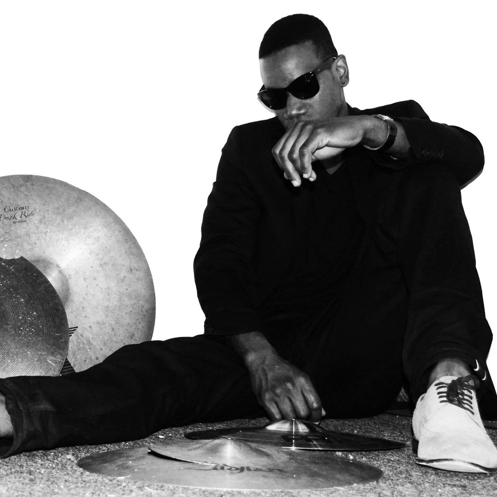
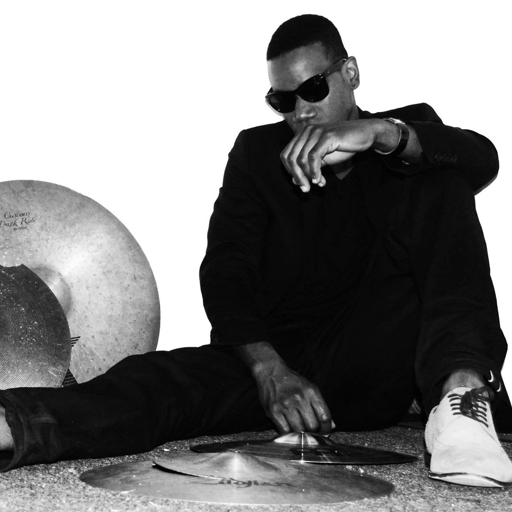

Noel Black

Armed with limitless potential and a fearless mind, Noel Black [aka Young Furio aka King Crow] has relentlessly pursued a life in music. Born on the Caribbean island of Tobago, Mr. Black is undeniably influenced by the island's unique culture and incredible diversity of musical traditions. As a boy, it was dancehall music and the artist Bounty Killer that first dominated his imagination - inspiring him to become an artist in his own right. Then, in 1996, when New York City became home, the irresistible power & energy of hip-hop fueled Brooklyn also has a major impact on his musical evolution. Noel breaks down cultural, racial and social barriers to reach new artistic levels. He created Corvus Entertainment to house artists of promise & collaborators of merit.
Listen to tracks off Noel's new album: "Black Friday"
"Girl"
"Blue Label"
 
